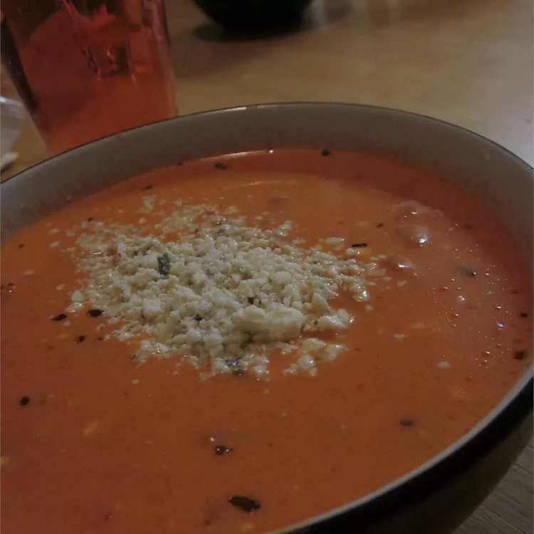

Sloppy Joes

Description
This is a very forgiving recipe. Don't worry if you have to modify the amounts or substitute a little. Try it with fresh tomatoes and basil in the summer! Serve in bowls or scoop out 8 inch round loaves of bread to make bread bowls.
Ingredients
- 1 tablespoon olive oil
- ¼ large red onion, diced
- ½ cup red bell pepper, diced
- 2 cloves cloves garlic, minced
- ¼ cup Gorgonzola cheese, crumbled
- 4 ounces cream cheese, softened
- ¼ cup heavy cream
- ¼ cup milk
- 1 (14.5 ounce) can diced tomatoes
- 1 ½ cups tomato juice
- 2 teaspoons dried basil
- 1 teaspoon white sugar
- ¼ teaspoon ground white pepper
Steps
- Heat oil in a medium saucepan over medium heat. Add the onion, pepper, and garlic; cook and stir 4 to 5 minutes or until vegetables are soft.
- Add the cheeses, cream, and milk; heat mixture until cheeses melt and the mixture is simmering.
- Stir in the tomatoes (including their liquid), tomato juice, basil, sugar, and pepper. Continue to simmer mixture for 15 to 20 minutes while stirring constantly. Do not boil.
Home